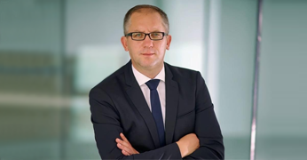

Łukasz Borowiak - Prezydent Miasta Leszna
 Urodził się w 1975 roku. Skończył studia z gospodarki przestrzennej na Akademii Ekonomicznej w Poznaniu (obecnie Uniwersytet Ekonomiczny). Całe swoje życie zawodowe związał z Lesznem, pracując w Miejskim Zakładzie Budynków Komunalnych, Starostwie Powiatowym oraz jako dyrektor w prywatnej firmie zarządzania nieruchomościami. Przez wiele lat działał aktywnie w ruchach miejskich i organizacjach samorządowych, tworząc podstawy „miasta obywatelskiego”. Był jednym z pomysłodawców i organizatorów festiwalu „Leszno czuje bluesa” oraz popularnej akcji krwiodawstwa „Wampiriada”. Założył stowarzyszenie „Działajmy dla Leszna”. W latach 2006 – 2010 był radnym miasta Leszna w klubie Platformy Obywatelskiej. W 2010 roku został posłem na Sejm RP z ramienia tego ugrupowania. W listopadzie 2014 roku został kandydatem na prezydenta miasta z listy komitetu PL 18 i wygrał wybory uzyskując ponad 12 tys. głosów. Ma żonę, Agnieszkę, która jest mgr ekonomii i pracuje jako urzędnik państwowy. Jest ojcem dwóch synów, Tymoteusza i Igora.
Skład Rady Miejskiej
- Sławomir Szczot - Przewodniczący Rady,
- Piotr Więckowiak - Wiceprzewodniczący Rady,
- Marek Ganowicz - członek Rady,
- Marek Goryniak - członek Rady,
- Ryszard Hayn - członek Rady,
- Kazimierz Jęcz - członek Rady,
- Bernardyna Kaźmierczak - członek Rady,
- Piotr Kois - członek Rady,
- Adam Kośmider - członek Rady,
- Hanna Kotomska - członek Rady,
- Krystian Maćkowiak - członek Rady,
- Tomasz Malepszy - członek Rady,
- Sławomir Mocek - członek Rady,
- Barbara Mroczkowska - członek Rady,
- Wanda Nawrocka - członek Rady,
- Wojciech Rajewski - członek Rady,
- Stefania Ratajczak - członek Rady,
- Grzegorz Rusiecki - członek Rady,
- Michał Skrzypczak - członek Rady,
- Krystyna Szudra - członek Rady,
- Damian Szymczak - członek Rady,
- Marek Wein - członek Rady,
- Jarosław Zielonka - członek Rady.